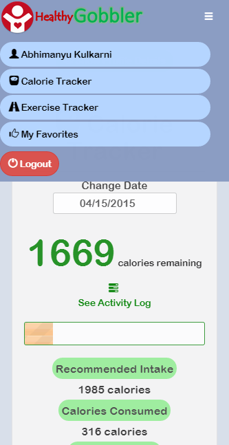

Responsive Application
The application is best viewed in Google Chrome on a 1400 X 500 px screen. In a fast pace world every application should
be viewable on mobile as well. Responsive nature of this application allows the users to view the website even on smaller
screens like cell phones and tablets. Below are a few screen-shots from various pages in the application that show responsive
nature of this application and how the application will appear on a cellular device.
1) User's Dashboard
2) Navigation Bar Toggle

3) Search Meal Page
4) Exercise Tracker Page
5) Favorites Page
6) Meal Details
7) Home Page
8) Contact Us Page
9) Login Page
Responsiveness in few parts of the application was handled by bootstrap itself. For example, mentioning "col-xs-4" along side
"col-md-4" for a div element, the div adjusts itself for mobile screens. In many cases, responsiveness was handled by Media queries
in css. Large images on meal details page and favorites page were adjusted according to screen size.